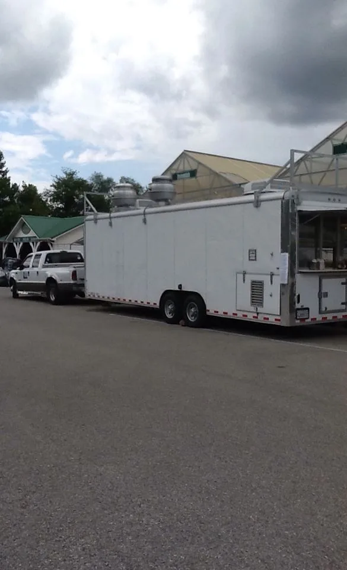
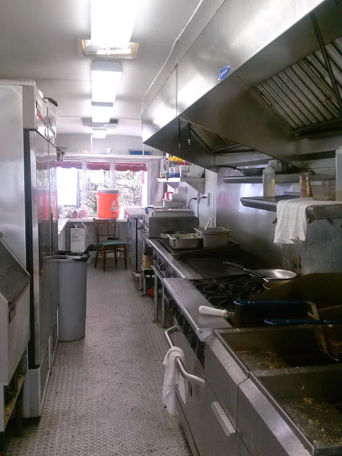
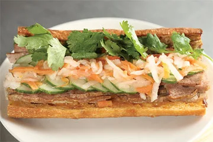
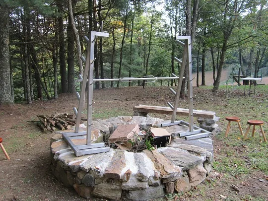

Longfin Grill food truck weddings
A full-service catering company with a food truck: a staff of seasoned chefs and Executive Chef Richard Perry, with over 30 years’ experience in fine dining, catering and event/festival planning.
While the phrase “food truck” usually calls to mind messy street food and questionable ingredients, Longfin Grill and Classic Caterers have been on the forefront of the new breed of food trucks for over 15 years, serving up high-end dishes with fresh, seasonal and locally sourced ingredients that fit perfectly at a formal event.
Food trucks have long been a favorite lunchtime and late-night food option, and they’re also a super-popular wedding catering trend. If midnight made-to-order tacos or fresh doughnuts for brunch sound perfect for your wedding festivities, Longfin Grill is the truck you want to bring to the wedding. With a 30 foot, commercial kitchen trailer (a nicer kitchen than many restaurants), Longfin Grill is perfect for any event.
Executive Chef Richard Perry practiced the farm-to-table cookery concept long before it was even termed: “My whole career, I’ve worked in the kind of properties that utilized the local farms, fishermen, foragers for staples to our seasonal menus.”


Festival-style weddings
We have access to Festival Grounds in the Floyd/Roanoke/SWVA area with unique stages and camping grounds for your wedding or event. We can design packages for your wedding with live music, Friday Rehearsal Dinner, Saturday Wedding Reception, Breakfast each morning, Food Truck available to guests all the time and a Sunday Festival Finale with great food, music and games.
We’ll send small platters to the wedding party throughout the day, since you are so busy with the wedding day preparations. And just because you’re having an indoor wedding doesn’t mean a food truck is out of the question: we can do a better job catering your wedding with an onsite full professional kitchen, and after the wedding reception the late night begins.
The late-night menu
Offer a midnight snack to satisfy your guests’ late-night munchies? After all that dancing and mingling, guests will happily devour food truck bites like:
- Local Lamb/Beef/Chicken Sliders
- Tacos
- Mini Po’boys
- Empanadas
- Cheesy Mac and Cheese
- Fried Green Tomatoes (okra, stuffed poppers, wild mushrooms)
- Fried Homemade Mozzarella Cheese Bits
- Crispy Blackeye Pea Cakes
- Kimchi and Seaweed Rice Noodles
- Sushi
- Ceviche
- Pickled Jumbo Shrimp
- Calamari
- Grouper Bites
- Grilled Pizzas
- Waffle Batter Chicken Fingers
- Frog Legs
…and that’s before the sweets: cupcakes, frozen yogurt, smoothies, Italian ice, fried pies and authentic key lime tarts, Santa Fe sopapilla, New Orleans beignet, Mexican crepes or fried ice cream.


Wine, beer and mobile bars
Mobile units are so sought-after now that food trucks are far from your only choice. You can also shake up cocktail hour and add style to your curbside feast with traveling wine or beer trucks. We work with local breweries and wineries who have vehicles for providing vino and brew tasting on-site. To convert any outdoor event into a personalized beer garden, we can bring a mobile mini-brewery unit, with plenty of taps ready to serve your favorite (or even home-brewed!) beers, ice cold and foam free.
Longfin Grill event mailing list
We are looking forward to having live music at Longfin Grill. We will have special dinner events for our Supper Club: wine tasting dinners, themed dinners, educational dinners and cooking classes. Please sign up to periodically receive notifications of our special events at Longfin Grill.